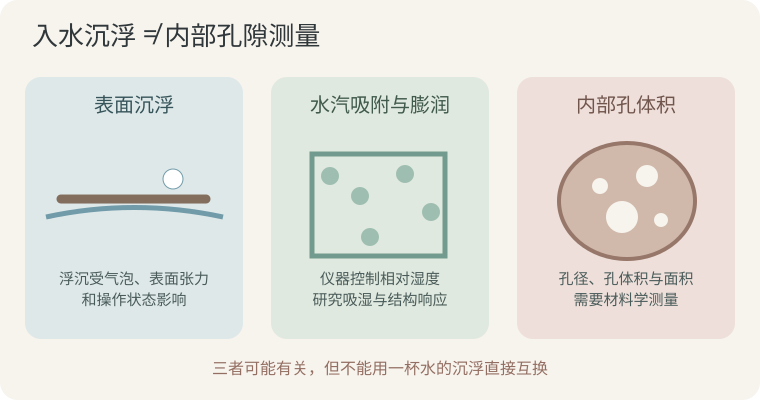
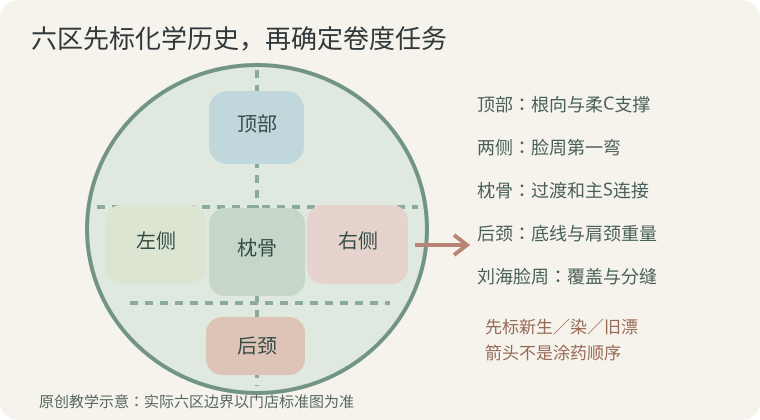
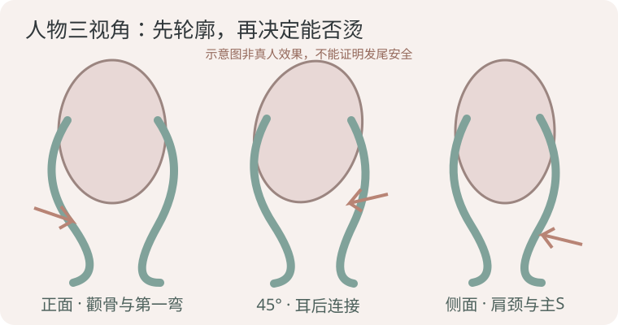

2026-11-22
【今日核心问题】一根头发放入清水很快下沉，能否据此认定旧漂发尾“高孔隙”、因此必须用某种烫发药水？不能。新增判断能力是将液面浮沉、表面润湿、内部吸湿膨润以及真正孔体积四种不同物理量分开。昨天研究换分缝产生的根部视觉差异，今天转到常被误当作发质检测的“浮水试验”。
【先看四件事】①一根发丝停留液面，可能受水的表面张力、附着气泡、投放方式、表面油脂或产品残留影响；②水滴是否铺展是表面润湿特征，不等于皮质层内部有多少孔；③吸湿量和膨润取决于角蛋白与水结合及时间、相对湿度；④严格的材料孔隙表征讨论气体吸附测得的孔体积、孔径分布、表面积。把“沉得快＝孔隙大＝受损严重”写成公式，是没有直接证据的推断。
【毛发结构】毛鳞片形成外层保护及表面摩擦与渗透边界，皮质层的角蛋白中间丝与相关蛋白承担多数弯曲、拉伸及恢复功能，部分毛发有髓质。二硫键是参与较持久结构的共价交联；氢键与水分敏感的暂时塑形相关；盐键及离子相互作用、疏水作用同样参与角蛋白稳定。天然新生发、两次染色中段、旧漂再染发尾可能有不同表面和内部状态，但不能单凭浮沉推断它们的二硫键数量。
【还原、水、张力、热、干燥、氧化分别做什么】还原：TGA、半胱胺或其他真实成分按厂家规定的配方、pH、浓度、时间和发质条件作用于部分可接近二硫键，同pH不是同药力，门店所称CA必须核对成分。水：影响氢键、蛋白塑化、渗入、湿态摩擦与黏弹性，不应把浮沉当精确含水率。张力：发片宽厚、提升角、杠径、杠轴、圈数和卷绕方向构成几何约束，旧漂段不能靠强拉补卷。热：只按兼容厂家流程进行，机器设定温度不是毛发内部温度。干燥冷却：水分变化及结构松弛影响暂时形态；玻璃化转变是材料学概念，不能直接作为机器设定温度。氧化：按配套体系帮助部分交联重新形成，不能保证所有损伤复原。
【卷度、持久、损伤分别记录】即时松S、自然干与洗后24小时持久性、湿态异常伸长及断丝是不同指标。新生根、中段染烫与末端旧漂必须独立诊断。出现湿态异常伸长、撤力恢复差、发黏、断丝或头皮灼热刺激，应停止对应高风险化学和热处理。不能把“漂过所以一定沉”或“浮着就健康”当作专业检测。
【近7天核验】优先核查2026-11-15至11-22公开科研，未找到能在真人门店情境下验证“单根发丝放清水浮沉可定量测毛发孔隙率，并据此决定热烫安全药力”的可靠新对照研究；改用3项有明确出处的材料研究。
【研究一】Breakspear、Noecker、Popescu，《New insights into hair compartments swelling via atomic force microscopy and dynamic vapour sorption》，2025-03-12，International Journal of Cosmetic Science，原始AFM与动态水汽吸附。核心结论：毛鳞片和皮质在湿度变化下的膨润与力学反应不相同；证据强度中（材料测量直接，但样本、模型和企业研发背景限制外推）；能支持分开讨论吸湿与内部结构；不能证明一杯水测得孔隙率或真人药剂适用。
【研究二】Breakspear等，《Learning from hair moisture sorption and hysteresis》，2022-07-27，International Journal of Cosmetic Science，原始水汽吸附与脱湿研究。核心结论：未经处理、烫发与漂发毛束的水汽吸附和脱湿滞后不同；证据强度中（有仪器数据，但不是门店浮水实验）；能支持化学历史、湿度和时间须控制；不能依据几秒内的浮沉判断二硫键状态。
【研究三】Hessefort、Holland、Cloud，《True porosity measurement of hair: a new way to study hair damage mechanisms》，2008-07—08，Journal of Cosmetic Science，原始气体吸附孔结构测量。核心结论：孔体积、孔径分布和表面积可以测定，不同氧化损伤路径出现不同孔结构；证据强度中（方法直接，但旧实验及处理条件有边界）；能支持“真实孔隙”是材料学测量对象；不能把论文的特定漂白数据当统一漂发配方或安全阈值。
【明确分层】科研表征机理；实际厂家技术手册决定产品适用、药力及完整氧化工艺；教材提供规范术语；门店“入水沉浮”和手感仅属于观察，不等于实验室孔隙率仪器检测，更不等于可以跳过真人安全评估。
【模拟教学案例，不是真实顾客】顾客31岁，自然知性希望少量浪漫感；脸型偏方椭圆，颧骨略宽、下颌线较方，顶部略平、后枕中等圆度、颈部偏短、肩宽中等。自然干锁骨下约8厘米，低至中低层次，下摆重量偏多。顶部密度中等、单根偏细软，左耳前稀疏；两侧中等发径，右耳后原生毛流向外弱C；后枕发量较多、粗硬，后颈毛流向左上。整体轻微自然波纹。根部约6厘米新生发，中段一年内氧化染棕两次且曾经做过一次热烫，末端约4厘米旧漂后染暗。两天洗头一次，常用吹风机，偶用夹板，每天愿意5分钟打理。
【顾客需求】参考图为经吹整的自然法式大S：顶部轻C、颧骨附近不鼓、下颌以下第一柔弯、锁骨附近主松S、后颈清爽。顾客说“自然一点，不要太卷，显脸小，我发尾放到水里一下就沉了，是不是高孔隙，给我用更温和的药？”参考图只有正面和右45度，缺自然干及背面资料。
【诊断与最大风险】先确认漂染烫具体时间和产品，独立记录三段手感、湿态异常伸长/断丝、弹性恢复以及头皮状态。浮沉仅能反映此条件下水面行为，不能当孔隙率测量；旧漂段本身的真实化学史比水杯结果更值得重视。最大风险是用浮沉结果直接选药，或者为了双S强行卷入明显失弹尾段。
【八步设计】①自然知性加一点浪漫；②适配略宽颧骨、偏方下颌、平顶、短颈和左右额角密度；③自然干锁骨下，安全有效长度优先；④顶部柔C、脸周不过宽、枕骨不过度堆；⑤低至中低层次，保留参与主S的发束；⑥顺额角分缝的长刘海弱C；⑦第一弯在下颌以下，主S在锁骨附近，损伤尾不能强行完成两道S；⑧自然干与五分钟轻吹双状态。
【剪裁与六区】顶部保持必要密度并设计有限支撑；两侧控制颧骨横向宽度，左耳前保留覆盖；后枕已有圆度以连接为主，右耳后顺天然毛流；后颈释放过重底线但保留符合肩颈比例的量感；刘海脸周根据分缝和第一弯微调。先剪骨架、再无药试排实际卷杠工作面、方向、发片宽厚、杠径、提升角与圈数。
【药剂、软化与冲水】不凭浮沉结果确定TGA、半胱胺或其他配方。只有取得具体厂家型号、实际成分、规定pH/药力、漂染禁忌、兼容热设备及配套二剂后，才制定分区涂放顺序、观察终点、起止时间。这里没有具体品牌型号，故不能虚构pH、药力档次、分钟数或软化百分比。依厂家要求冲水，记录持续滴水/均匀湿润/局部偏干为可见等级而非精确含水率。发片平铺、尾纸不折返、张力温和；热、时间、干燥、冷却与氧化遵守对应完整兼容体系，冷烫按自身说明不额外加热。
【预期及补救】目标是柔和顶部、颧骨旁收敛、下颌以下第一弯、锁骨附近舒展主S；左右45度耳后不鼓，侧面后颈有留白。如果洗后松卷，先查层次、实际操作记录与整理差异；如果旧漂段失弹，停止风险处理、修短或选择单柔C/非化学造型。不能以水杯沉浮解释所有烫发失败，更不能据此补药或补热。
【本课核心】“高孔隙”只是未经验证的材料描述，不是审美风格。无论水杯里的发丝浮或沉，都不能代替人物比例判断。对本案例，顶部平但脸稍长，只建立有限C型支撑，不做尖高；颧骨旁不把最大横向蓬松点堆在最高颧骨处；第一弯在下颌以下，主卷峰在锁骨附近。最短层次终点要保留足够发束承托主S，不能因为“湿发易吸水”就打薄整头。
【正面】观察顶部支撑高点、最大横向宽度、左右额角覆盖、下颌第一弯；【左右45度】观察右耳后原生外向毛流与枕骨连接及左耳前密度，不能只看右侧参考照；【侧面及背面】观察后枕圆度、后颈留白与肩线，主S不应全部挤在短颈衣领处。发量少的人可保留更多两侧束感；长颈窄肩的人可能需要增加侧后体积；圆脸与长脸都不能只凭标签套唯一方案。五个坐标：顶部高点、最大横向宽度、第一弯、最大卷峰、自然干底线，各自标记。
【原创图一｜浮沉、吸湿膨润、真实孔隙】雾蓝液面示意受表面张力及气泡影响的浮沉，灰绿显示湿度受控下水汽与皮质/毛鳞片作用，燕麦显示材料孔体积概念。看什么：三个实验目标不同，不能用左图推算右图数值。箭头只是概念，非实测结果。
【原创图二｜六区历史与技术任务】顶部负责有限支撑，两侧负责脸周第一弯，枕骨负责侧后连接，后颈负责重量和收尾，刘海脸周另记分缝。看什么：先逐区写新生/染/旧漂及损伤停止信号，再做杠轴、发片、杠径选择；陶土箭头不是药剂涂放顺序，分区边界以门店现行六区标准图为准。
【原创图三｜正面、45度、侧面】正面看颧骨和第一弯，45度看耳后连续，侧面看后颈与主S重心。看什么：人物适配与材料吸湿是两个不同判断，不用“浮水结果”推断发型美感。
三张SVG由本轮AI编辑独立创作、无外链和第三方照片，不是真人烫后照片或吸湿/孔隙实验数据。



【数字边界】以下只供公仔头无药剂、无热几何练习；外径及角度不是科研推导的真人安全值。杠径是工具外径，提升角以局部头皮切线为0度。
【顶部】候选30—34毫米、20—40°，任务是柔C与分缝顺向支撑。看发旋及毛流，压根查落杠点和夹具，炸根查逆向提升与根向，不能用高张力硬造高度。
【枕骨】候选28—32毫米、15—35°，重点连接侧区与后部圆度，后枕已经饱满不应再叠加最大卷峰；检查横向宽度、发片厚度、实际杠面工作长度。
【左右两侧】候选30—36毫米、10—30°，下颌以下第一弯；左耳前保留覆盖，右耳后天然外向可试非镜像杠轴。发片平铺、尾纸包尾、张力温和，不能为了消除毛流对旧漂尾段施加强拉。
【后颈】可不卷，或0—15°弱C练习，控制肩线处重量、流向与主S连接，避免堆积。
【刘海脸周】按有效长度顺额角毛流选择弱C或不卷，不能把短碎发强行卷入第一道S。
【圈数与排错】真正卷入圈数取决于有效发长、杠径与卷入路径，不以固定两圈等于双S。硬折痕查尾纸与折尾、尾翘查毛流及衣领、断层查层次终点与邻区第一弯、流向冲突查杠轴交界、后颈堆积查下摆重量。上述几何错误均不能依靠浮水测试或补药补热判断。
【先问五个问题】①你说“自然”，是洗完自然干就有松S，还是每天愿意轻吹5分钟？②“不要太卷”，是不要密集小卷，还是第一弯也想非常淡？③“显脸小”，你更在意颧骨、下颌还是耳后的宽度？④发尾具体哪年漂过、染过或烫过，湿态有没有异常失弹和断丝？⑤如果旧漂尾不适合再次烫，能接受修短、单柔C或非化学造型吗？
【模拟门店对话】顾客：“我一根头发放进水里很快沉，网上说这是高孔隙，是不是特别伤？”发型师：“这个动作受液面、气泡和表面产品影响，不能当成仪器测出来的孔体积。你以前漂过的长度，我们会独立检查，不靠水杯判断。”顾客：“那是不是换成最弱的药就安全？”发型师：“不能只按‘弱’判断，具体还原体系与操作要看产品说明、化学历史及现场耐受。”顾客：“我想自然、不要太卷、显脸小。”发型师：“先看正面颧骨宽度、下颌第一弯，再转45度看耳后和枕骨。如果发尾无法安全完成双S，就调整设计。”顾客：“洗完会和照片一样？”发型师：“照片有吹整因素，我们会区分自然干和五分钟轻吹。”
【可复制话术】“我们不会用一根头发的浮沉直接判断孔隙率，更不会据此决定药水。先分区看新生、染后、旧漂的历史和实际弹性恢复，再用八步法确定人物风格、长度、层次和第一弯，六区落实各位置的C/S与流向。化学操作服从具体厂家完整说明；如果发尾耐受不足，就调整长度或造型，不为了复制照片强行加药加热。”
【先做五题，随后参考答案】题1：单根发丝沉到杯底，能证明高孔隙吗？【答案】不能；水杯浮沉与表面张力、气泡、产品残留、投放和润湿状态相关，未测气体吸附孔体积。判断路径：先问测量的是什么量。
题2：护理后同一发束可能浮得更久，意味着皮质层强度改善了吗？【答案】不能直接证明。护理可能改变表面润湿或残留，力学强度需独立测试。
题3：漂发末端染回深色、浮水看着正常，能按健康新生发烫吗？【答案】不能。颜色与浮沉都不能抹去真实氧化历史，先查异常湿态恢复、断丝及产品禁忌。
题4：正面好看、右45度耳后鼓，需要首先加强药力吗？【答案】不能。先查侧后毛流、层次、发片方向、杠轴与主卷峰位置。
题5：实验室的吸湿论文能给出某热烫机温度吗？【答案】不能。材料研究的湿度、玻璃化与膨润结论不能直接替代特定厂家设备和配伍说明。
【完整思考路径】分清表面浮沉/润湿/吸湿/孔结构→核实真实漂染烫史与停止信号→确定安全有效长度→八步定人物方案→六区安排卷度→无药试排→厂家完整工艺→自然干、24小时及复湿复盘。
【今日唯一低风险离体单变量实验：护发素处理能否改变同类发丝的水面行为？】目的：观察同来源毛束是否会因不同表面处理，而改变初次入水时的表面停留和水滴铺展；这只比较表面行为，不测孔隙率。
【材料】8束同来源、发长和粗细尽量接近、化学史一致的离体毛束（每组4束）；同规格软夹、透明宽口水杯、同批常温清水、滴管、同一款冲洗型护发素及其真实标签、吸水纸、刻度背景板、手机固定机位、计时器、温湿度计。全程不使用还原剂、二剂、漂粉或热设备，不在顾客头上试验。
【唯一主动变量】是否按标签进行这款护发素处理：A组只做对应清水步骤；B组做同一时长的护发素处理并按标签冲净。控制来源、发量、发长、清洗与冲水温度、次数、时长、干燥状态、投放方式、水杯大小和水面清洁度。护发素处理可能同时改变多种表面成分，所以不宣称只改变“孔隙”。
【步骤】①编号随机分配；②按约定的同批清水流程清洁、仅B组加入规定护发素步骤并冲净；③两组均完全自然干到一致状态；④在水面以同一高度轻放，避免按入和挤出气泡，记录0、30秒、2分钟时是否停留及可见气泡；⑤另一同类毛束取等量水滴，记录铺展外观（非精确接触角）；⑥在相同光线和机位记录，24小时后复拍；⑦再统一清水复湿、自然干，两轮重复。可以调整顺序避免操作先后造成偏差，不预设结果。
【空白记录】样本A01—A04：清水对照；B01—B04：护发素处理。逐束列：原始状态｜是否附气泡｜0秒｜30秒｜2分钟｜水滴铺展描述｜24小时｜复湿1｜复湿2｜温湿度｜异常。禁止将四束合成一个未经测量的数字，不虚构结果。
【门店应用】若重复结果显示浮沉受处理方式影响，就在发质分析中把“水杯观察”明确列为不可据此确定内部孔隙的演示；用真实漂烫史、耐受停止信号和统一摄影记录做决策。即使实验无差异也保留数据。本试验不能确定二硫键、气体吸附孔隙率、药力、pH、热处理温度或安全时长。
【一个原理】浮沉、表面润湿、内部吸湿膨润和真正孔体积是不同测量对象，一杯水不能给出毛发“孔隙率”的可靠数值。
【一个错误】看发丝沉得快就断定旧漂段可以用某种“低药力”安全再烫，或者浮着就当健康发。
【下次重点观察】把三段化学历史、湿态恢复、断丝和自然干轮廓分开记录，在离体毛束上以“是否护发素处理”为单变量比较水面行为、24小时及两轮复湿，不伪造实验结果。